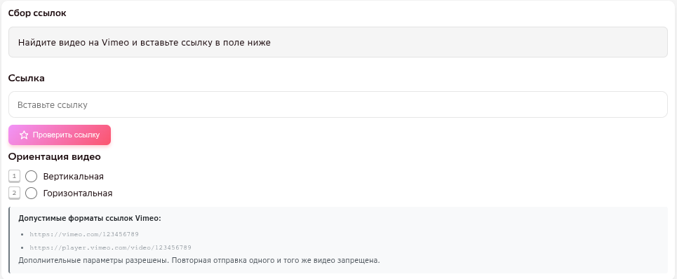
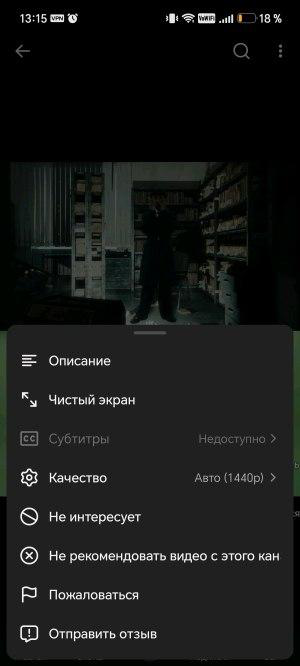

ТИП ЗАДАНИЯ
Видеоколлаж
Одна ссылка на одно видео, разделённое на 2 части с идентичным движением — кадр из фильма/после CGI и тот же кадр до эффекта, на фоне зелёного или синего экрана. Доступно в двух пулах — YouTube и Vimeo; правила одни и те же, различается только формат самой ссылки (см. ниже). Общие для всех типов заданий критерии (длительность, человек в кадре, повторы, ИИ и т. п.) — на странице «Критерии отбора видео».
Если видео — не коллаж (одно видео с «до»/«после» последовательно, или два отдельных видео), собирайте его в другом пуле — см. «Последовательное видео / два видео».
ИНТЕРФЕЙС
Формат ссылки и поля задания
Открывая задание, вы видите одно поле для ссылки, два чекбокса ориентации («Вертикальная» / «Горизонтальная» — третьего варианта нет, так как здесь всегда коллаж) и кнопку «Проверить ссылку».

| Поле | Что вносим |
|---|---|
| Ссылка |
Формат зависит от пула:
Для любого источника: обязательно HD (1280×720) и выше, хорошее качество картинки (не только цифры разрешения — см. примеры ниже), обе части коллажа — одинакового качества между собой. Повторная отправка одного и того же видео запрещена. |
| Ориентация видео | Чекбокс «Вертикальная» или «Горизонтальная» — по ориентации коллажа. Один из двух обязателен: без отмеченного чекбокса задание не отправится. Выставленная ориентация учитывается при оценке задания. Как определить (FAQ заказчика от 09.10.2026): по линии разрыва между частями — если линия горизонтальная (части друг над другом), ориентация горизонтальная; если линия вертикальная (части рядом), ориентация вертикальная. Примеры обеих ориентаций ниже. |
| «Проверить ссылку» | Проверяет точное совпадение — не была ли уже добавлена именно эта ссылка. Если да — задание не отправится, нужно подставить другую ссылку. «То же самое движение» на другом видео кнопка не ловит — см. «Повторы движения». |
Комментарий валидатора: низкое качество. Проверяйте картинку целиком, а не только цифры разрешения.
Замечание заказчика: у видео на этой заявке не должно быть такого плохого качества.
Комментарий валидатора: видео должно быть в разрешении HD (1280 на 720), и обе части коллажа должны быть одинакового качества.
На шортсах разрешение не всегда видно сразу. Откройте меню (три точки сверху справа) → «Качество» — там указано фактическое разрешение видео.

КРИТЕРИИ
Критерии, специфичные для коллажа
Слева — что подходит, справа — что не подходит. Остальные критерии (длительность, человек в кадре, повторы, ИИ и т. п.) — общие для всех типов задания, см. «Критерии отбора видео».
| Параметр | Подходит | Не подходит |
|---|---|---|
| Граница между частями | ✅ Граница тонкая, неподвижная и проходит ровно посередине — обе половинки равны друг другу. Линия может быть и горизонтальной, и вертикальной — зависит от ориентации самого коллажа, оба варианта нормальны. | ❌ Граница толстая либо проходит не посередине (половинки не равны); либо граница подвижна — сдвигается в кадре (заметно, например, по смещению потолка на фоне). Пример — ниже. |
| Масштаб частей | ✅ Масштаб человека одинаков в обеих частях коллажа. Ориентир заказчика: если в одной части человек виден в полный рост, во второй части он должен быть не меньше половины своего размера там же. | ❌ Масштаб частей разный — человек в одной части заметно мельче (например, вдвое меньше своего размера в другой части, как в корнер-кейсах ниже). |
| Состав кадра | ✅ Видео состоит только из двух частей коллажа (до и после эффекта), движение — только внутри них. | ❌ Движение происходит не только на частях коллажа, но и за его пределами — недопустимо. Видео должно состоять только из двух частей коллажа. Пример от заказчика — ниже. |
| Реальная съёмка хотя бы в одной части | ✅ Одна из частей — видео с реальным зелёным/синим экраном, без спецэффектов (совпадает с определением «до» эффекта). | ❌ Обе части нарисованы/сгенерированы — недопустимо, нужна хотя бы одна часть без эффектов. Пример от заказчика — ниже. |
| Расположение в частях | ✅ Обе части идентичны по расположению: человек и движение находятся в одном и том же месте кадра в обеих частях. | ❌ Зеркальный коллаж — одна часть отражена относительно другой (то, что в одной части слева, в другой справа). |
| Несколько человек в кадре | ✅ Если несколько человек на переднем плане — все выполняют одинаковое движение. Человек на заднем плане может выполнять другое движение, если человек на переднем плане выполняет целевое движение. | ❌ Несколько человек на переднем плане выполняют разные движения — недопустимо. |
Между частями коллажа — заметная толстая граница. Такое видео к сбору не подлежит.
Из инструкции (27.10.2026): сбору не подлежат видео, где граница между коллажами подвижна — видно по движению потолка на заднем плане.
Масштаб частей коллажа не совпадает. Такое видео к сбору не подлежит.
Замечание заказчика: части коллажа не равны — такое нельзя.
Замечание заказчика: части коллажа не равны — такое нельзя.
Комментарий валидатора: частей коллажа должно быть две, а здесь остальные части кадра просто размыты.
Замечание заказчика: движение происходит не только на частях коллажа, но и за его пределами — такое недопустимо (на фоне коллажа не должно происходить посторонних движений). Видео должно состоять только из двух частей коллажа (до и после эффекта).
Замечание заказчика: примеры, где на одной из частей коллажа люди находятся слишком далеко — не берём. Люди здесь примерно вдвое меньше своего размера во второй части.
Замечание заказчика: примеры, где на одной из частей коллажа люди находятся слишком далеко — не берём.
Вопрос ассессоров: является ли такая граница коллажа приемлемой? Ответ заказчика: да, приемлемая, но не шире.
Замечание заказчика: оба коллажа нарисованы — необходимо, чтобы на одной части коллажа было видео с реальным зелёным экраном, без спецэффектов.
Комментарий валидатора: на видео люди либо видны не полностью (даже не по пояс), либо в кадре много людей, выполняющих разные движения. Если в кадре несколько человек на одном плане — они должны двигаться одинаково.
Линия разрыва вертикальная (части коллажа рядом друг с другом) — ориентация вертикальная.
Линия разрыва горизонтальная (части коллажа друг над другом) — ориентация горизонтальная.
ПРИМЕРЫ
Разбор примеров из официальных инструкций
Семь примеров из официальных инструкций заказчика — с видео и вердиктом.
Видео длится менее 30 минут, идентичное движение — с 18 по 41 секунду (5 секунд и больше), не перекрывается предметами или наложениями, половинки коллажа равны. Заказчик уточняет: простое движение в начале ролика (проходка, примерно до 5-й секунды) — не тот пример, который нужно собирать.
Видео длится менее 30 минут, движение — в пределах 5 секунд, наложения не мешают, половинки равны, граница между частями тонкая. Зелёный/синий экран на кадре «до» не виден — это не проблема, эффект CGI всё равно показан коллажем.
Видео длится менее 30 минут, идентичное движение происходит в пределах 5 секунд, наложения не перекрывают движение, половинки равны, но коллаж состоит не из двух частей — за пределами основного коллажа на фоне дублируются движения (несмотря на то, что они размыты, такое видео не подлежит сбору).
Обновлено заказчиком 09.10.2026 — раньше этот же ролик был положительным примером («для сбора подходят и вертикальные коллажи»); этот факт по-прежнему верен, просто теперь у примера другой акцент.
Видео длится менее 30 минут, движение — в пределах 5 секунд, наложения не мешают, половинки равны. На верхней части коллажа есть движение камеры, а на нижней нет — это различие сбору не мешает.
Видео длится менее 30 минут, но само движение длится менее 5 секунд (с 3:07 по 3:11), между частями коллажа — толстая граница, на правом кадре есть склейка.
С 02.10.2026 минимум длительности движения — 2 секунды, так что по длительности ролик теперь прошёл бы, но он по-прежнему не подходит из-за толстой границы и склейки.
Видео слева после применения эффекта считается наложением; также не подходит по разрешению — оно слишком мало по отношению к масштабу видео «до» эффекта.
Половинки коллажа не равны друг другу: на верхней половинке видна только часть человека, а масштаб в целом слишком маленький.
ПЕРЕД ОТПРАВКОЙ
Проверьте себя
- Ссылка ведёт на видео в разрешении HD (1280×720) и не длиннее 30 минут — и картинка в целом хорошего качества, не смазанная.
- Отмечен чекбокс ориентации — вертикальная или горизонтальная.
- Нажата кнопка «Проверить ссылку», чтобы исключить дубли.
- Движение выполняет человек, млекопитающее или антропоморфное существо (прямоходящее, с глазами и конечностями как у человека), а не неживое.
- Движение активное — не просто стоит, сидит, покачивается или идёт.
- Движение целиком, без склеек — завершено и идентично в обеих частях коллажа.
- Граница между частями тонкая, неподвижная и по центру, масштаб частей совпадает.
- Видео состоит только из двух частей коллажа, движение не выходит за их пределы.
- Хотя бы одна часть — реальная съёмка, без эффектов.
- Коллаж не зеркальный — расположение в обеих частях одинаковое.
- Если в кадре несколько человек на переднем плане — все выполняют одинаковое движение.
- Видео не сгенерировано нейросетью и не является мультипликацией/анимацией.
- Такое движение ещё не собиралось в проекте.
- В ролике нет сцен курения, алкоголя, запрещённых веществ, насилия (кроме постановочных драк) и т. п.